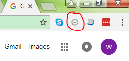
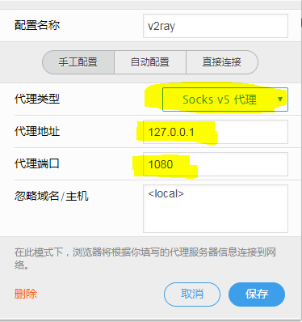
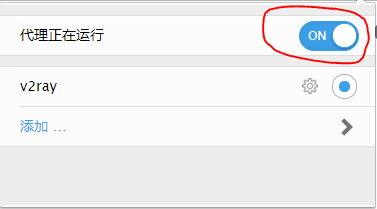
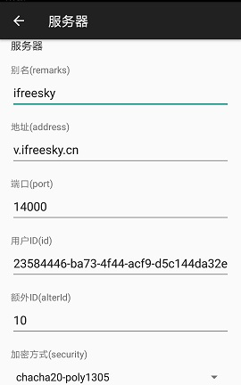
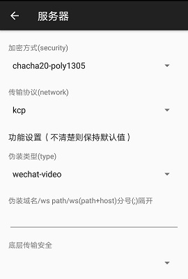
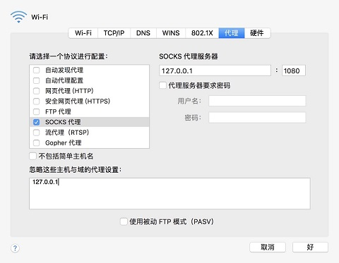

*****学习贯彻十九大精神，拥护党的领导，做一个遵纪守法的好公民。*****
这里介绍Windows、安卓手机以及苹果手机/电脑和Ubuntu系统的科学上网方法。
使用本方法之前，先退出国产杀毒软件。比如360安全卫士/安全管家，金山毒霸之类的。
一、Windows客户端
64位下载地址
下载1 下载2 下载3 下载4 下载5 下载6
32位下载地址
下载1
下载后解压，如果没有压缩软件，请点 这里 下载
打开解压后的文件夹，双击 v2ray.exe，看到黑窗口说明启动成功。***注意：黑窗口要一直开着才能翻墙。
然后打开火狐(FireFox)浏览器(建议更新到最新版)， 点右上角 打开菜单 --> 选项，最下面 网络代理, 点 设置...

然后就可以访问google, youtube之类的网站了。
谷歌浏览器(Chrome)需要下载插件 Falcon Proxy。注意安装插件需要能翻墙，如果不知道怎样安装插件请使用火狐(Firefox)浏览器。
插件安装成功后，点击右上角插件图标

点 【添加... 】 增加如下配置并保存

点如下开关，启动代理

二、安卓手机/平板 客户端
下载 V2RayNG 安装完成后，修改服务器配置信息如下，点右上角 对勾 保存。
如果安卓市场找不到V2RayNG，可以点 这里 下载。

上图中的 用户ID 请入群后向群主索取，然后复制 粘贴。

如上图配置好之后，点击左下角画斜杠的纸飞机，变成没有斜杠的样子
然后打开手机浏览器就可以访问google, youtube之类的网站了。
三、苹果手机iPhone/平板iPad
App Store 下载 Kitsunebi
参数设置 参考上面的安卓。
四、苹果电脑Mac系统 下载
解压后打开v2ray，设置socks代理，即可通过浏览器访问google。
Mac系统设置全局socks代理方法如下 选择 系统设置(System Preferences)，在 “Internet & Wireless” 下面选择 网络“Network”

或者
下载V2RayX 使用方法请自行上网查找，参数设置参考安卓。
V2RayX参考配置
V2RayX参考视频
五、Linux系统
以Ubuntu系统为例
1.打开终端，执行安装指令
$ bash <(curl -L -s https://install.direct/go.sh)
2.安装后的配置文件config.json在/et/v2ray目录下
3.先停止v2ray
$ service v2ray stop
4.把配置好的config.json文件(可以拷贝windows下的该文件)覆盖原来的文件
比如修改后的 config.json 文件在 /home/user/Downloads/v2ray/ 目录下
$ cd /et/v2ray
$ sudo cp /home/user/Downloads/v2ray/config.json config.json
5.启动v2ray
$ service v2ray start
6.打开火狐Firefox，设置代理如下
菜单[Edit-Preference]进入Advanced页面，选择[Network]Tab页，
在 Connection Setting... 里面配置手动代理Socks V5.